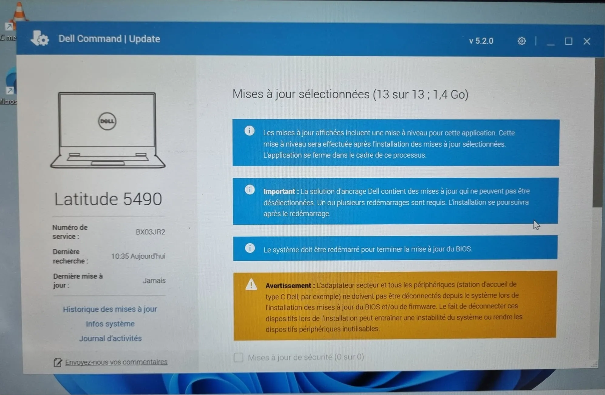
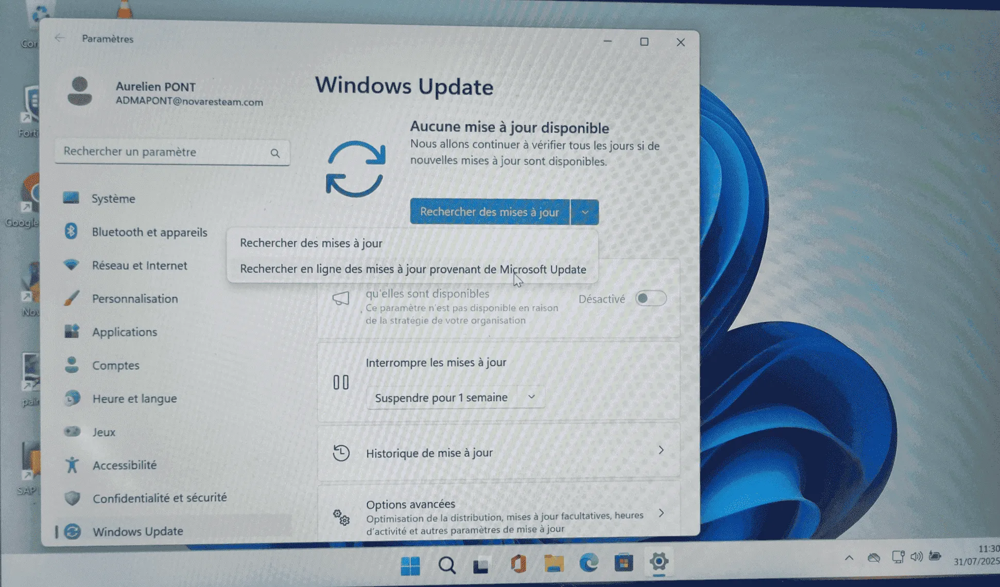
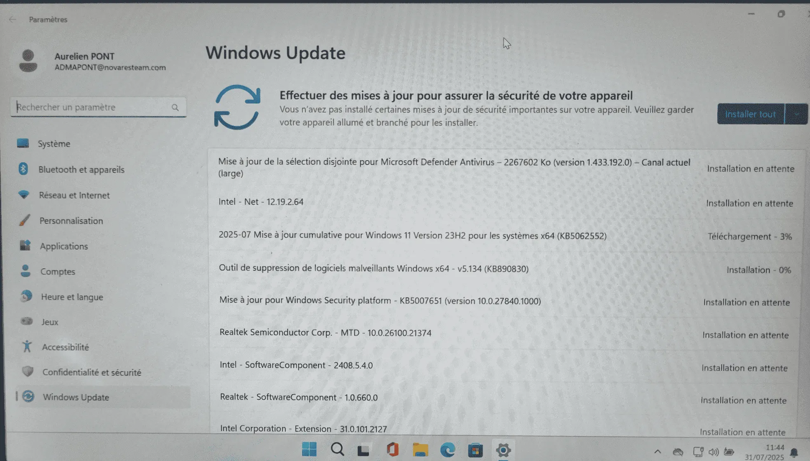
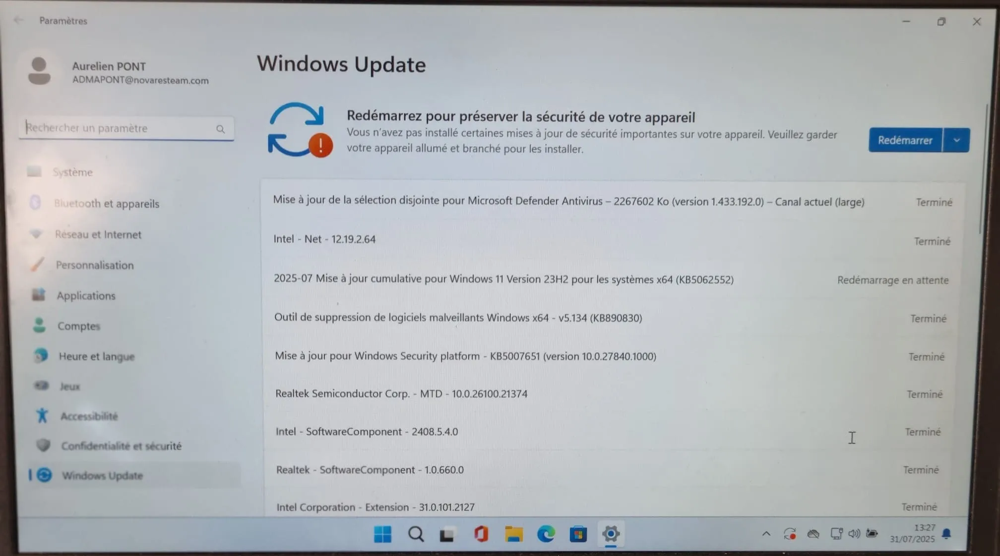

📋 Contexte de la procédure
Après un déploiement SCCM, cette procédure permet de vérifier et réaliser les mises à jour matérielles (Dell) et logicielles (Windows Update) avec les redémarrages nécessaires.
💻 Mises à jour Dell
Pilotes, firmware, BIOS
🪟 Windows Update
Mises à jour de sécurité
🔄 Redémarrages
Validation post-installation
🎯 Déclenchement : Cette procédure est initiée après un déploiement SCCM pour garantir que tous les postes sont à jour matériellement et logiciellement.
⚙️ Procédure de mise à jour post-SCCM
1
Vérification des mises à jour Dell disponibles
Ouvrir l'application Dell Command Update ou accéder au support Dell pour vérifier les mises à jour disponibles.

🔍 Vérification des mises à jour Dell disponibles
💡 Information : Les mises à jour Dell incluent les pilotes, le firmware et le BIOS pour optimiser les performances et la sécurité.
2
Installation des mises à jour Dell
Sélectionner et installer toutes les mises à jour Dell critiques recommandées.

⚙️ Installation des mises à jour Dell
⚠️ Important : Certaines mises à jour matérielles nécessitent un redémarrage. Planifier l'installation en conséquence.
3
Vérification des Windows Update
Ouvrir les paramètres Windows et vérifier les mises à jour disponibles dans Windows Update.

🪟 Vérification des Windows Update disponibles
🔐 Sécurité : Les mises à jour Windows sont essentielles pour la sécurité et la stabilité du système.
4
Installation des Windows Update
Télécharger et installer toutes les mises à jour Windows disponibles.

📥 Installation des mises à jour Windows
🔄 Redémarrage : La plupart des mises à jour Windows nécessitent un redémarrage pour être finalisées.
5
Redémarrage et validation finale
Effectuer le redémarrage final et vérifier que toutes les mises à jour ont été correctement appliquées.

✅ Redémarrage et validation finale
Vérifications post-redémarrage :
✅ Tous les périphériques fonctionnent correctement✅ Aucune erreur dans le Gestionnaire de périphériques
✅ Windows Update indique "À jour"
✅ Dell Command Update ne propose plus de mises à jour critiques
🔑 Points de contrôle essentiels
✅ Mises à jour Dell : Pilotes, firmware et BIOS à jour
✅ Windows Update : Toutes les mises à jour de sécurité installées
✅ Redémarrages : Effectués après chaque série de mises à jour
✅ Validation : Fonctionnement normal post-redémarrage
✅ Documentation : Mises à jour enregistrées pour traçabilité